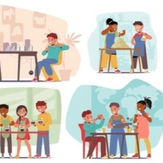
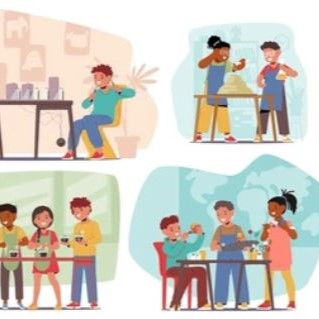

Ideas Esenciales
- Las unidades temáticas se basan en la integración de materias alrededor de un tema central significativo.
- Se conecta el contenido con la vida real y con cuestiones relevantes para los estudiantes.
- Promueven el trabajo colaborativo y el aprendizaje activo entre estudiantes y docentes de distintas disciplinas.
- Favorecen evaluaciones auténticas que tienen aplicación en la vida real dentro del proceso de aprendizaje.

Pasos para diseñar una unidad temática
 

1. Escucha la voz del estudiante
Inicia preguntando a tus estudiantes qué temas les importan. Sus preguntas reales aumentan la motivación. Esto puede incluir problemáticas sociales o científicas que les interesen.
2. Integra intereses y objetivos académicos
Elige temas que conecten el interés personal del alumnado con aprendizajes de múltiples materias. Por ejemplo, estudiar enfermedades puede integrar ciencias, historia, lectura, escritura y más.
3. Ajusta según el contexto
Adapta la duración, complejidad y enfoque del proyecto a la edad, grado y contexto cultural del grupo. Alterna entre metodologías tradicionales y trabajo interdisciplinario intensivo si es necesario.
4. Transforma tu rol como docente
El docente se convierte en facilitador, guía e investigador junto a los estudiantes. Deja de ser un experto en una sola materia para convertirse en un mediador de aprendizaje global.
Desafíos de las Unidades Temáticas
- Currículo rígido: Las estructuras escolares tradicionales (timbres, horarios, materias separadas) dificultan la integración real.
- Planificación compleja: Requiere mucho tiempo de coordinación entre docentes de distintas disciplinas.
- Desconexión si no parte del interés estudiantil: Como ocurrió en el proyecto “Here We Are” en Chicago, la falta de vínculo emocional con el tema puede hacer que el entusiasmo disminuya.
- Transformación docente: No todos los profesores se sienten cómodos al dejar de ser especialistas y convertirse en guías interdisciplinarios.
“Aunque este enfoque puede parecer caótico al principio, la verdadera innovación educativa requiere que salgamos de nuestra zona de confort.”

Ventajas de las Unidades Temáticas
- Conexión real: Al partir de intereses auténticos, los temas se vuelven significativos y los estudiantes se involucran más.
- Aprendizaje profundo: Se desarrollan habilidades en múltiples áreas a través de proyectos integrados y auténticos.
- Creatividad y participación: Los estudiantes crean cosas relevantes: informes, diseños, debates o hasta naciones ficticias.
- Docentes como modelos: Al convertirse en investigadores junto a los alumnos, los docentes demuestran cómo enfrentarse al conocimiento real.
“Una clase integrada es una clase viva: donde el arte, la escritura, la ciencia y la historia dialogan en un mismo proyecto.”
Justificación: ¿Por qué esta metodología?
Las Unidades Temáticas no son simplemente una forma de integrar materias. Son una herramienta poderosa para transformar cómo se aprende. En lugar de separar el conocimiento en asignaturas desconectadas, esta metodología lo reconstituye como un tejido significativo, basado en la vida real.
Como afirman Daniels y Bizar (2005), la organización fragmentada de las materias en la escuela responde a una lógica industrial del siglo XX, no al modo natural en que aprendemos. El mundo actual no se divide por asignaturas, y nuestros estudiantes tampoco.
Al organizar el aprendizaje en torno a temas como la identidad digital, los estudiantes pueden combinar narración (Lengua), cultura (Sociales), ética (Ciudadanía) y diseño (Arte) en un solo proyecto. Esto refleja cómo enfrentamos los problemas reales en la vida cotidiana: desde múltiples ángulos, con múltiples herramientas.
Aunque esta metodología exige mayor planificación y coordinación entre docentes, su impacto es profundo: los estudiantes ya no "aprenden para la escuela", sino que aprenden para vivir. Como señalan González y Flores (2014), cuando partimos de las preocupaciones reales de los estudiantes, como su seguridad en redes o su expresión cultural, la motivación emerge naturalmente.
Ejemplo: En un proyecto sobre la vida saludable, un grupo de estudiantes pudo explorar los nutrientes en Ciencias Naturales, crear recetas en Lengua, calcular calorías en Matemáticas y diseñar afiches en Arte. Todo dentro de una unidad significativa que respondía a una pregunta real: ¿cómo cuidar nuestro cuerpo?
Practicar esta metodología es una forma de desaprender la rigidez de las materias estancas y abrazar la complejidad interconectada que define el siglo XXI.
Planificación de Ejemplo
 Ver planificación en PDF
Ver planificación en PDF
Referencias
- Área-Moreira, M. (2018). La identidad digital del alumnado en contextos escolares: análisis y propuestas educativas. Revista de Educación a Distancia, 18(56). https://doi.org/10.6018/red/56/10
- Castillo, R. (2020, marzo). Unidades temáticas [Diapositivas de PowerPoint]. Universidad San Francisco de Quito.
- Common Sense Media. (2023). Digital Citizenship Curriculum. https://www.commonsense.org/education/digital-citizenship
- Daniels, H. y Bizar, M. (2005). Teaching the Best Practice Way: Methods that Matter, K-12.
- González, M., & Flores, L. (2014). Unidades temáticas integradoras para el desarrollo de competencias. Editorial Trillas.
- Ministerio de Educación del Ecuador. (2016). Currículo de los niveles de Educación General Obligatoria: Subnivel de Educación General Básica Superior. https://educacion.gob.ec/curriculo-educacion-general-basica/
- Piaget, J. (1972). Psychology and pedagogy. Viking Press.
- Tobón, S. (2013). Formación por competencias: Pensamiento complejo, currículo, didáctica y evaluación. Ecoe Ediciones.
- Tomlinson, C. A. (2017). El aula diversificada: Dar respuesta a las necesidades de todos los estudiantes. Paidós Educación.